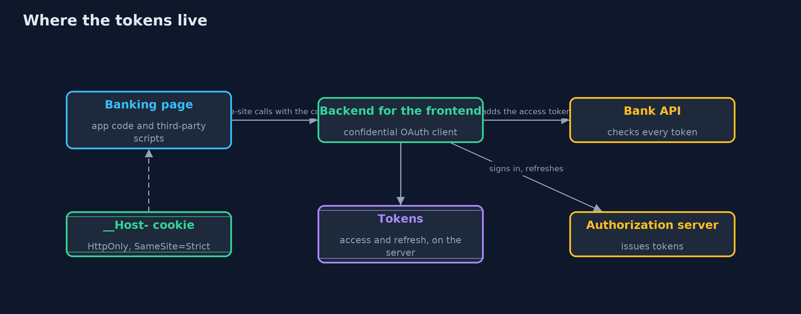
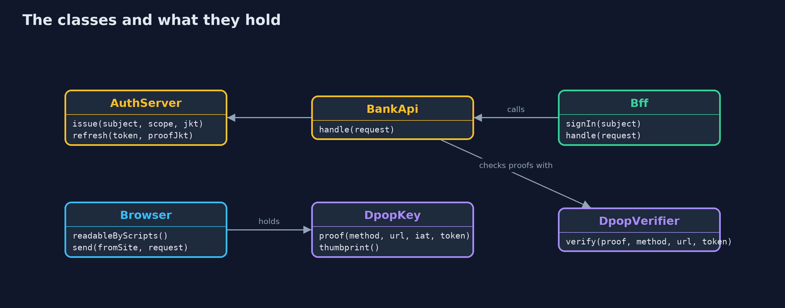
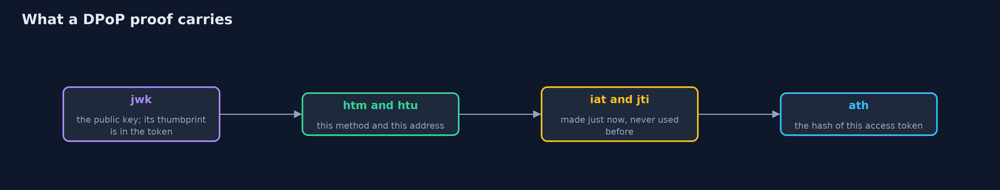
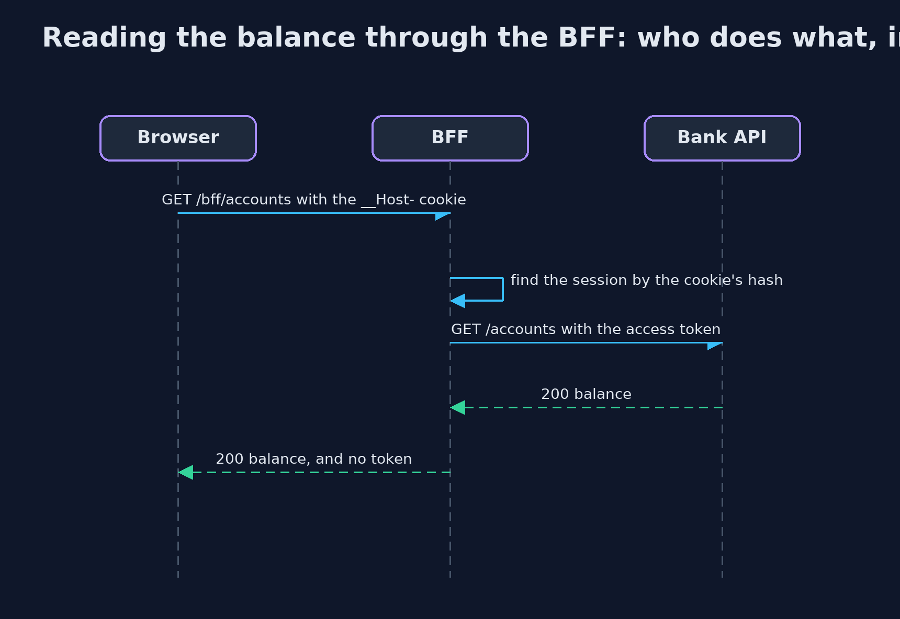

Tokens in the Browser
src/main/java/com/jk/explore/security/bff/
├── AuthServer.java The bank's authorization server, reduced to what this lesson needs: it issues short access tokens (signed JWTs, five minutes) and long refresh tokens (opaque, thirty days)
├── BankApi.java The bank's API, a resource server
├── Base64Url.java Base64url without padding, as JWS uses it (RFC 7515 section 2)
├── Bff.java A backend for the frontend
├── BffDemo.java A single-page banking app and where its tokens should live, in five acts: tokens in the browser's storage, a backend for the frontend that keeps them on the server, requests from another site, tokens bound to a key with DPoP, and the bill
├── Browser.java A model browser holding one banking page
├── Bytes.java Constant-time comparison and SHA-256, the two byte operations every check here relies on
├── Cookie.java A cookie as the browser stores it, with the attributes that decide who can read it and when it is sent
├── DpopKey.java A client's DPoP key (RFC 9449): an Ed25519 key pair whose public half travels in every proof as a JWK
├── DpopVerifier.java Checks a DPoP proof as RFC 9449 section 4.3 describes: one well-formed JWT of type dpop+jwt, signed with the EdDSA key in its own header, for this method and this URL, made within the last minute, never seen before, and, when an access token comes with it, carrying that token's hash
├── Ed25519.java Ed25519 keys and signatures with the JDK alone (RFC 8032, used in JOSE as "EdDSA", RFC 8037)
├── InvalidTokenException.java A token the validator refuses
├── Json.java A small, strict JSON reader and writer for token headers and claims: objects, arrays, strings, integers, booleans and null
├── Jws.java The compact JWS form, header.payload.signature (RFC 7515 section 7.1), with Ed25519 signatures
├── PageScript.java A third-party script included in the banking page, say a compromised analytics library
├── Request.java An HTTP request as the servers in this demo see it: method, full URL, headers (names compared without case) and cookies
├── Response.java A status and a short body
└── SimClock.java A clock in whole seconds that only moves when told, so expiry checks are exact and repeatable
A single-page app that keeps OAuth tokens in the browser hands them to every script on the page. A backend for the frontend keeps them on the server and gives the browser only an HttpOnly cookie, and DPoP binds a token to a key that never leaves the browser, so a stolen token is useless on its own.
A single-page app (SPA) runs in the browser and calls APIs directly. When it uses OAuth, the easy design keeps the access token and the
refresh token in the browser, often in localStorage. Everything in localStorage can be read by any script on the page: the app's own code,
and every third-party library it includes. If one of them is compromised, the tokens leave with it, and a refresh token keeps working long after the page is closed.
The IETF's guidance for browser-based apps recommends a backend for the frontend (BFF): the OAuth client lives on a server, keeps the tokens there, and gives the browser only a session cookie that scripts cannot read. When tokens must be in the browser, DPoP (RFC 9449) binds them to a key that scripts cannot extract, so a copied token is refused without a fresh, signed proof. The demo builds both, with a model browser and a model third-party script that does only what any script on a page may do.
The idea in everyday terms
Think of a hotel guest. Keeping the room key on the restaurant table means anyone who walks past can take it and come back at night. Leaving it at reception means the guest shows their face and gets let in, and the key never leaves the desk. DPoP is a key that only opens the door when the guest's own fingerprint is on it: steal the key, and it opens nothing.
The scenario
An online bank's single-page banking app signs Ana in with OAuth and reads her balance and makes transfers through the bank's API. The demo keeps the tokens in the browser first, then moves them behind a backend for the frontend, sends requests from another site, binds tokens to a key with DPoP, and counts the cost.
Run
./gradlew run
The demo tells the story in 5 acts, each printing exact numbers that the tests check:
| Act | What it shows |
|---|---|
| 1. Tokens kept in the browser | The app keeps its access and refresh tokens in localStorage; a third-party script takes both; the stolen access token works until it expires five minutes later, and the stolen refresh token gets a new one ten days later. |
| 2. A backend for the frontend keeps the tokens on the server | The BFF signs Ana in on the server and gives the browser one __Host- cookie (Secure, HttpOnly, SameSite=Strict); the script takes 0 tokens; it can still read the balance while the page is open, and nothing after it closes. |
| 3. Requests started by another site | A hidden form on evil.example gets 401 because SameSite=Strict keeps the cookie off; an older browser sends the cookie but not the request header, so 403; adding the header needs a preflight the BFF refuses; one transfer is made, the bank's own. |
| 4. Tokens bound to a key, with DPoP | The token carries the browser key's thumbprint; with a fresh proof it works; as a plain bearer token, with another key's proof, replayed, for another request or two minutes late it is refused; a bound refresh token works only with the app's key. |
| 5. The bill | A second BFF with its own store answers Ana's cookie with 401; every call takes one more hop; a cleared browser loses its DPoP key and Ana signs in again; and a script on the open page can still use the key. |
Test
./gradlew test
22 tests in BffAndBrowserTest, DemoRunsTest, DpopTest, TokensTest. The JWK thumbprint is checked against RFC 8037 appendix A.3, both from the published public key and from the published private key. Every DPoP refusal is a test with its exact reason, and a refused proof is shown not to use up its id.
What the simulation got right, and what it left out
The browser and the third-party script are models: the browser applies the rules that matter here (what scripts can read, SameSite, the CORS preflight) and the script does only what any script on a page is allowed to do. The authorization server, the bank's API and the BFF run in the same process, on a simulated clock. Keys come from fixed seeds and Ed25519 is deterministic; session ids, refresh tokens and proof ids are random and never printed.
Technologies and versions
Every version below is pinned in the project's build files and was the latest stable release when the project was built.
| Technology | Version | Used for |
|---|---|---|
| Java | 25 | the language and runtime; a Gradle toolchain finds or downloads the JDK |
| Gradle | 9.8.1 (wrapper) | build and run; nothing to install, the wrapper downloads it |
| org.junit.jupiter:junit-jupiter | 6.1.3, set by junit-bom | JUnit 5: the tests (tests only) |
| org.junit.platform:junit-platform-launcher | 6.1.3, set by junit-bom | JUnit platform launcher, which Gradle needs to run the tests (tests only) |
| videokit | repository tool (tools/videokit) |
the narrated video and animation: Piper en_US-amy-medium, speed 0.8, longer pauses (the amy-slow voice) |
Learning Material
| Document | What it is for |
|---|---|
| Problem statement | the situation and what the project must show |
| Prerequisites | what you need to know first |
| Tokens in the Browser, explained | the acts in prose |
| Session guide | a one-hour lesson with exercises |
| Animated walkthrough | the acts step by step, narrated |
| Threat model | what is protected, who could harm it, and how, using STRIDE |
| Spec | what this project must be true of |
| Expected output | the golden demo output every test and every port checks against |
The idea in one picture
With a backend for the frontend, the tokens stay between the BFF and the bank; the browser holds only a cookie.

Where each piece sits
The BFF holds tokens per session; the browser holds a cookie and, with DPoP, a key the page can use but not read.

How the data moves
Each part answers one question; together they tie a token to one key, one request and one moment.

Who calls whom, in order

Video
video/tokens-in-the-browser-explained.mp4 (with .m4a audio and .srt subtitles) is built by video/build_video.sh. Rendered media is not committed.
What it costs
- One more server. The BFF must be run, scaled, monitored and patched, and every API call now takes one more hop.
- Sessions need a store. With more than one BFF instance, a session made on one must work on the others, so the store is shared (see session-management).
- A script on the open page can still act as the user. Neither the BFF nor DPoP stops code running in the page from making requests while the page is open; keeping such code off the page (a strict CSP, few third-party scripts) is still needed.
- DPoP needs key storage in the client. A browser key lives in storage that can be cleared, and a lost key means signing in again; servers must keep a record of recent proof ids.
When this is too much
For an app with no tokens worth stealing, a cookie session with a traditional server is enough. Once an app holds OAuth tokens for an API that moves money or private data, the BFF is the default the industry now recommends, and DPoP is worth adding where tokens must still be used from the browser or a mobile app.
Where you have already met this
- Banking and health apps that sign in through a page on their own domain and never show a token.
Authorization: DPoP ...and aDPoP:header in API requests.- Security advisories about a compromised analytics or chat script on a popular site.
- Frameworks that ship a "BFF" or "token handler" component for single-page apps.
Where this sits
This project follows oauth2-authorization-code-pkce and jwt-done-right, and uses the session rules of session-management. It is in identity-and-access.